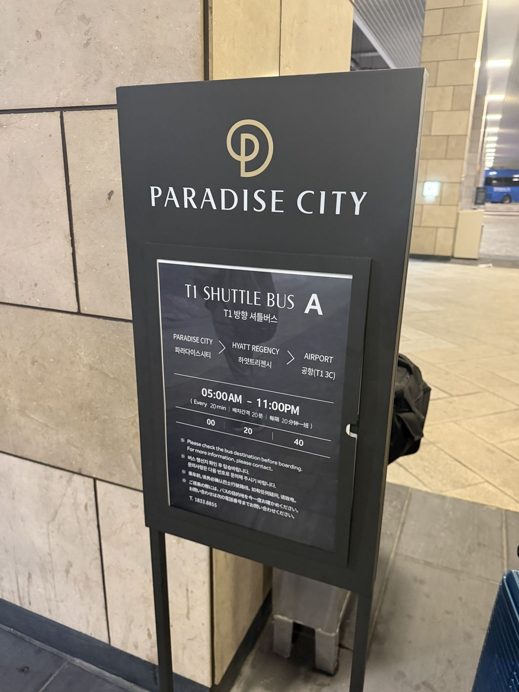
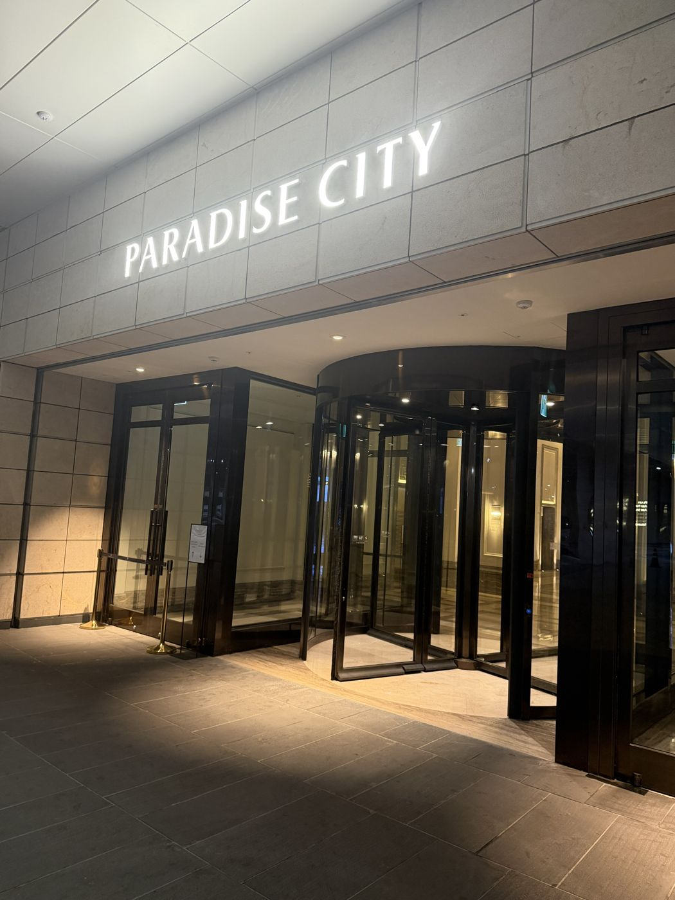

仁川空港 → パラダイスシティ
空港からの無料シャトルバス
仁川空港の第1・第2ターミナルとパラダイスシティの間に、予約なしで乗れる無料シャトルがあると紹介されています。車で5分ほどです。運行の間隔は紹介によって20〜60分と違うので、現地で確認してください。
出典：複数の旅行・攻略ブログ（公式ではない）（確認日 2026-10-31）
パラダイスシティ → 仁川空港（第1ターミナル）


乗り場は地下
パラダイスシティの地下にバス停があります。「PARADISE CITY」の入口の近くに、シャトルバスの案内板が立っています。
出典：運営者の体験（2026年に8回訪問）（確認日 2026-11-03）
乗るのは「T1 SHUTTLE BUS A」
パラダイスシティ → ハイアット リージェンシー → 空港（第1ターミナル 3C）の順に止まります。
出典：運営者の体験（2026年に8回訪問）（確認日 2026-11-03）
時間：朝5時〜夜11時、20分おき
案内板では、毎時00分・20分・40分に出ると書かれていました。乗る前に行き先を確認するよう案内されています（問い合わせ 1833-8855）。時間や乗り場は変わることがあります。
出典：運営者の体験（2026年に8回訪問）（確認日 2026-11-03）
第2ターミナルへ行くとき
第2ターミナル行き
第2ターミナルとの間にも無料シャトルがあると紹介されていますが、乗り場と時間はまだ確認できていません。ホテルやパラダイスシティのスタッフに確認してください。
出典：複数の旅行・攻略ブログ（公式ではない）（確認日 2026-11-05）
タクシー（深夜など）
深夜はタクシー。スタッフに頼むのが安いかも
深夜はシャトルバスがないのでタクシーになります。急いでいるときは、翻訳アプリで行き先を見せて、建物の外にいるパラダイスシティのスタッフに頼むのが安く済むかもしれません。カジノから仁川空港の第1ターミナルまで10,000ウォンでした。タクシーアプリの「TABA」を使ったときは18,000ウォンくらいかかった記憶です。
出典：運営者の体験（2026年に8回訪問）（確認日 2026-10-31）
ホテルとカジノの間
ハイアットからカジノまで歩いて約2分
ハイアット リージェンシー 仁川からカジノまでは、歩いて2分くらいで着きました。
出典：運営者の体験（2026年に8回訪問）（確認日 2026-10-31）
ハイアットと空港のシャトル
仁川空港の第1ターミナルとの間に無料シャトルがあると紹介されています。時刻表は変わることがあるので、ホテルに確認してください。
出典：海外ホテル予約サイトの掲載情報（確認日 2026-10-31）
時間や乗り場は変わることがあります。行く前に、ホテルやパラダイスシティのスタッフに確認してください。